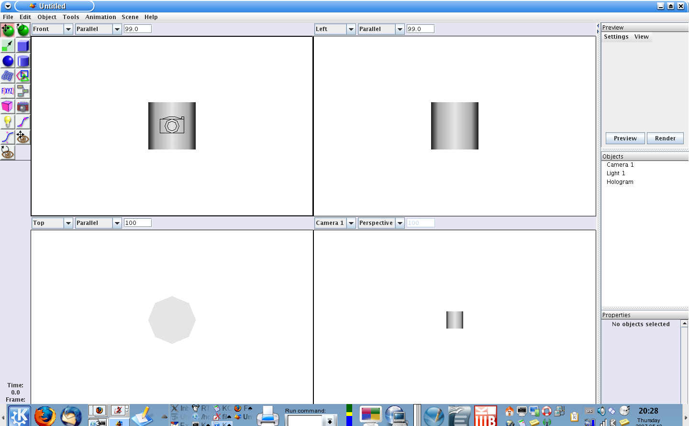
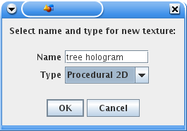
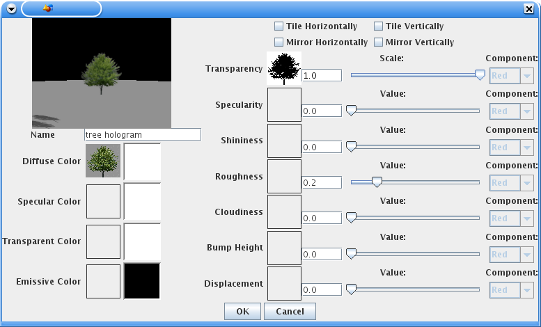
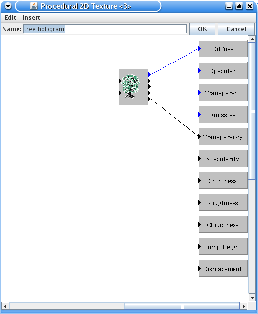
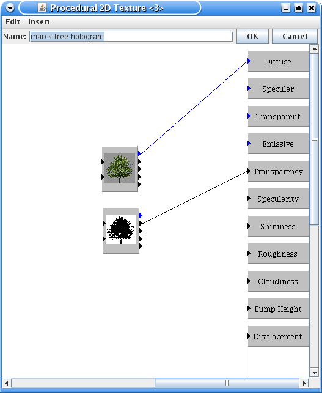
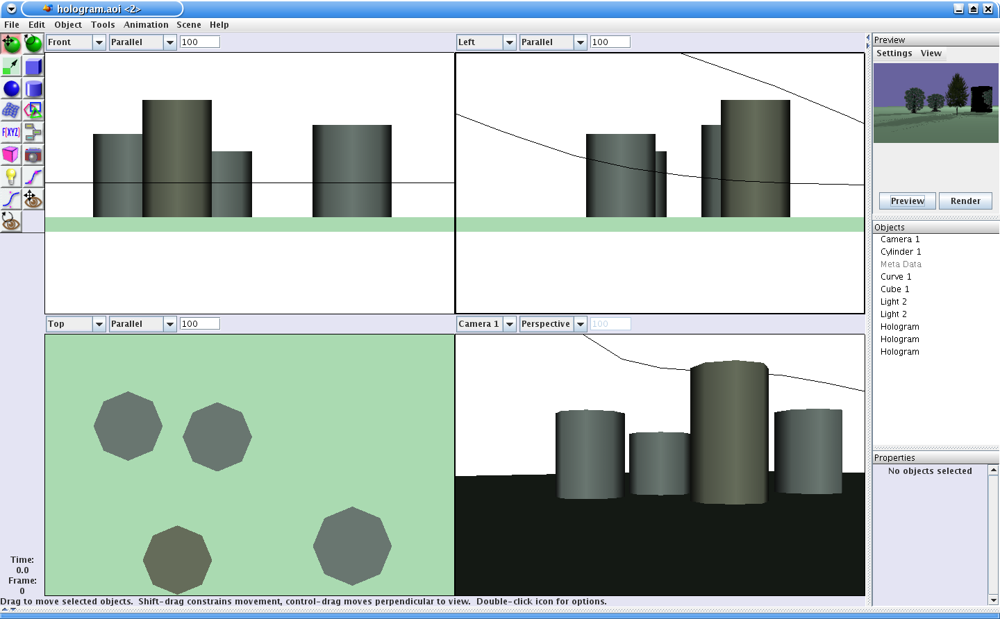

Hologramm
Objekte
Als
Hologramm (griech. holos für ganz, vollständig,
gramma für Botschaft, Nachricht, Zeichen)
bezeichnet man eine – in der Regel mittels kohärentem
Laserlicht
hergestellte – fotografische
Aufnahme, die nach Ausarbeitung und
Beleuchtung mit gleichartigem Licht ein echtes dreidimensionales
Abbild des Ursprungsgegenstandes wiedergibt. (Quelle: Wikipedia)
1.Überblick
Hologramm Objekte werden bereit gestellt
von einem Plugin (dem Hologram Plugin). Wie der Name suggeriert
erstellen Hologramm Objekte ein projiziertes 3D Bild aus 2D Daten.
Die typische Nutzung des Hologramm Objektes ist es zügig
eine Menge von z.B. Bäumen für einen Wals zu erstellen.
Während Hologramme im 3D Raum existieren und auch Schatten
werfen, wie Sie das von 3D Objekten gewohnt sind, sind sie eben nicht
vollständige 3D Objekte und haben entsprechende Limitationen.
Es ist
wichtig 2 grundlegende Dinge über Hologramm Objekte zu
verstehen:
Hologramm
Objekte werden nur von Raytracern gerendert. Alle anderen Renderer
zeigen das Hologramm als Zylinder.
Hologramm Objekte werden
immer so dargestellt das sie zum Betrachter zeigen. Deshalb macht es
keinen Sinn zu versuchen Texturen anderen Flächen als der
Vorderseite (front face) zu zuweisen.
2.
Erstellung
Erstellen
Sie ein neues Hologram Objekt, indem Sie das "Hologram
Object" aus dem Werkzeug Menü wählen.

Hologramm Objekte werden als Zylinder dargestellt in der
Weite und Höhe des projizierten Bildes. Wenn Sie die Höhe
oder Breite des Zylinders ändern (also die X und Y Größe
des Hologramm Objektes), ändern Sie damit auch die
korrespondierende Größe des entstehenden Hologramms.

3.
Texturierung
Hologramm
Objekte können mit Texturen versehen werden und in der Tat ist
es nicht sinnvoll sie ohne Texturen zu belassen. Da man normalerweise
mehr als ein Hologramm in der Szene hat (nicht wie bei Prinzessin
Leia), ist es ebenso sinnvoll die Textur zu benennen, so das sie gut
wiederverwendet werden kann. Sie können dafür eine
bildbasierte (pixelbasierte) Textur wählen oder eine prozedurale
2D Textur. Welche Sie wählen hängt von Ihren Vorlieben und
Zielen ab.


Wenn Sie entscheiden eine bildbasierte Textur zu verwenden,
dann werden Sie es vermutlich in etwa so versuchen um zu starten:

Wichtig:
Gleich
zu Beginn deaktivieren Sie alle tile
und mirror Optionen.
Sie werden ggf.
eine Transparenzmaske erstellen wollen und diese dem
Transparenzkanal zuweisen - das garantiert, das dort wo das
Hologramm transparent sein soll keine Pixel entstehen.
Wenn Sie mehr
Flexibilität wünschen, entscheiden Sie sich für eine
prozedurale 2D Textur. In diesem Fall starten Sie mit dem Bildmodul
in dieser Textur. Wenn das Bild einen Transparenzkanal aufweist (Tif
und PNG können das) und einen transparenten Hintergrund hat,
können Sie das Setup so gestalten wie hier dargestellt.

Andererseits müssen Sie sonst ein einem separaten
Bildeditor (GIMP, PS) eine Transparenzmaske erzeugen und das Setup
wie hier unten gestalten:

Wenn Sie die Textur einmal erstellt und benannt haben, können
Sie diese ihrem Hologramm Objekt zuweisen.
Notiz: Bedenken
Sie dass das Hologramm Plugin die Textur nicht in der
Szenendarstellung anzeigt oder wenn es mit dem Raster Renderer
gerendert wird.

Beachten Sie das das im obigen Bild die Hologramm Objekte als
Zylinder dargestellt werden, aber gerendert werden sie als ihre
Projektionen vom Raytracer (hier in der kleinen Vorschau oben rechts)
- stellen Sie sich bei Ihrem Raytracer R2D2 der benutzt wird um ein
Hologramm / Holografie darzustellen.
4.
Tipps and Tricks
In
AOI sind bildbasierte Texturen als MappedTextures implementiert,
was normalerweise bedeutet das diese auch verlangen, das man
das Mapping reguliert (Höhe und Breite ect.) wann immer das
Objekt in der Größe geändert wird. „Hologram
Objects“ sind so eingestellt, das sie das automatisch
erledigen. Wenn Sie also die Höhe des Hologramm Objektes ändern,
wird die Textur entsprechend angepasst. Wenn Sie einmal die Größe
des Hologramm Objektes verändern und die Größe ist
nicht richtig angepasst (z.B. in der Vorschau) wählen Sie
einfach das Hologramm Objekt, öffnen dessen Texturdialog und
klicken auf OK. Das appliziert die Textur erneut und behebt das
Problem im Normalfall. Das sollte in der Zukunft - wenn kleine
Codefehler ausgebügelt sind, nicht mehr nötig sein.
Wenn
Sie einen schwarzen Streifen an einer oder mehreren Kanten des
Hologramm Objektes sehen, dann ist es wahrscheinlich das Sie die
Bildskalierung ändern müssen, oder –
unwahrscheinlicher - die Skalierung im Textur Mapping (-dialog).
Ähnlich ist es wenn Sie schwarze Artefakte oder zufällig
auftretende schwarze Flächen an der Ober- oder Unterseite des
Hologramm Objektes entdecken, dann versuchen Sie die Y-Skalierung in
den Textureigenschaften zu vergrößern. Es ist möglich
das es durch Rundungsfehler zu diesen Ungenauigkeiten kommt und in
einem Beispiel konnte ein hinzufügen einer 0,001 zu der Größe
das Problem beheben.
Für detailliertere Informationen
schauen Sie bitte ins AoI Manual.